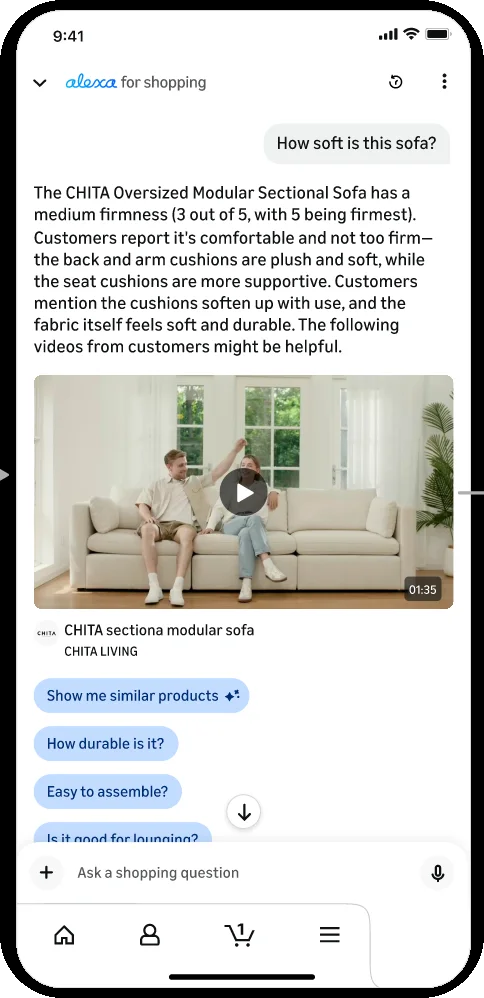

Match the mode to the question
Answer in a richer mode (a picture, a recording, a clip) only when it carries something text cannot. For a fact, text wins; for how something works or feels, showing beats telling.
Where it sits in the flow
- AskThe person has a question, or a thing they want to find.
- AnswerThe AI returns something: an excerpt, a marker, a segment, a generated answer.
- CheckThe person looks at the evidence and decides whether to believe it.
- DecideThe person acts: proceeds, moves on, or corrects the AI.
What users needed
People wanted the answer in whatever form settled the question fastest. For whether something fits, a number did. For whether it is soft, how it is assembled, or how it looks in use, they wanted to see it, and they said plainly that for those questions a video was worth more than any description. The mode that helped depended on the question.
The problem
Once a product can answer with images, audio and clips as well as text, the temptation is to use the richest mode everywhere. But a richer mode costs the person more: time to play, attention to watch, bandwidth to load. When the question is a fact, that cost buys nothing, and the person waits through a clip for a yes or no. When the question is about how something works, looks or feels, text makes a claim that only the richer mode can show.
The pattern
Choose the mode by the kind of question. Facts, measurements and yes-or-no questions get text, first and alone. Questions about how something works, how it is done, or how it looks and feels get the richer mode, placed with the text that frames it. Keep the text answer in every case, so the richer mode is an addition the person can take or leave, and so the answer still works when the picture or sound cannot be used.
What makes it hard
The classification has to happen before the answer is composed, and it has to be right most of the time, because a wrong mode is visible immediately. The richer mode also has to be judged on whether it adds information, not on whether it exists; a demonstration that shows what the text already said is cost without value.
When it fails
Video attached to a factual answer adds friction and nothing else; people learn to skip the videos, including the ones that mattered. Text alone for a how-to question leaves the person unconvinced and sends them elsewhere to see it. A richer mode with no text behind it fails anyone who cannot play it.
The accessibility dividend
Because the text answer is always present, the answer works with the sound off, the picture off, or the media not loaded. The richer mode is an addition for those who can use it, never the only carrier of the answer.
In my work
The multimodal version of Alexa answers a product question in text and, where it helps, with the product video that supports it. When the experiment ran, the lesson was sharp: for factual questions such as whether a sofa fits a room, text alone performed best and video added friction; for how-to questions and demonstrations, the video answer roughly doubled the sales the text answer produced. The design now uses video where it shows something and holds it back where it does not.
In pictures

Source
- From watching to asking: how AI is reshaping how we consume shopping videos. Xinmin Weekly and Xinhuanet, June 1, 2026, in Chinese. Xinmin Weekly, Xinhuanet. A feature about my work at Amazon; the patterns on this site are my own English write-up of the same work, stated so that they apply beyond it.